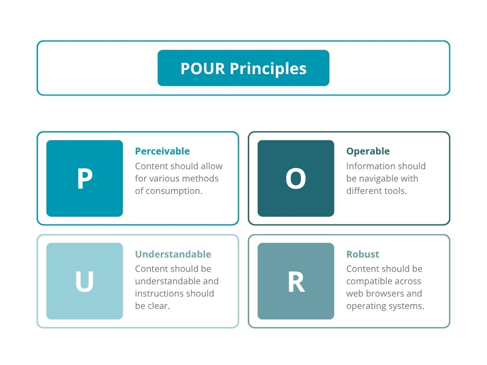

What is Accessibility?
Accessibility (often abbreviated as A11y) is the design of products, environments, and services to be usable by everyone, including people with disabilities, ensuring equitable access. Here is the definition provided by the U.S. Department of Education’s Office for Civil Rights:
“Accessible means a person with a disability is afforded the opportunity to acquire the same information, engage in the same interactions, and enjoy the same services as a person without a disability in an equally effective and equally integrated manner, with substantially equivalent ease of use. The person with a disability must be able to obtain the information as fully, equally and independently as a person without a disability. Although this might not result in identical ease of use compared to that of persons without disabilities, it still must ensure equal opportunity to the educational benefits and opportunities afforded by the technology and equal treatment in the use of such technology.”
Accessibility is important because it allows people with disabilities to have equal footing and participate in everyday activities in ways that would otherwise be more challenging for them. There are many different places where accessibility matters: in the home, in the workplace, in medical facilities, and so on. For this course, we will focus on accessibility in the context of education.
Why is accessibility important in the classroom?

“In 2019 through 2020, about 21 percent of undergraduate students and 11 percent of post-baccalaureate students reported having a disability.” - National Center for Education Statistics
Additionally, a substantial number of college students with disabilities do not register for formal accommodations through their institutions’ disability services. As a result, official reporting likely underestimates the true number of students with disabilities. As students with disabilities make up a significant portion of the student population, designing digital courses with universal design in mind is vitally important.
There are a number of benefits to accessible design in education.
When students with disabilities cannot easily access course resources, it puts them at a disadvantage compared to their peers. Conversely, creating accessible academic resources increases equal access to information and ensures that all students can access, interact with, and learn from online content and resources.
When students with disabilities are given accessible course materials, it enhances their engagement, improves their academic performance, develops their digital literacy skills, and prepares them for future opportunities.
Accessible course design also makes student learning environments more welcoming and promotes empathy in the classroom. While awareness in universities is increasing, accessibility is still a challenge for many university students with disabilities.
Having the right perspective is also crucial.

According to a 2015 study by Barbara Hong, students with disabilities report that the most frequent barrier they face is how they are perceived by faculty members once they reveal their needs for accommodations.
Students report feeling judged by professors whose expectations are lowered when they discover that the student has a disability. Not only is this discriminatory, but it may lower students' self-esteem, impacting their academic performance. In fact, Specific Learning Disorders (SLD) have been associated with lower levels of self-efficacy, making it that much more important to foster an environment in which students can build confidence in their own abilities.
Designing with accessibility in mind also benefits the educator by allowing them to reach a broader audience of students, enhancing their professional growth and development, and helping them comply with legal and regulatory requirements, like WCAG (Web Content Accessibility Guidelines).
While training in accessibility for instructors is not currently required in many universities, higher education institutions may still face legal repercussions for not making content accessible. Lawsuits against higher education institutions for inaccessible content have increased in recent years, and by April 26, 2027, all universities will be required to have accessible online resources to comply with ADA Title II digital accessibility rules. These rules will apply to websites, mobile apps, and digital content.
Whom Does Accessibility Help?
Accessibility also benefits students with situational or temporary disabilities (e.g., a student with a broken arm).
Barriers students face in digital learning
Students with disabilities often face barriers in digital learning for the following reasons:
Key Principles
For this course, we will highlight the POUR principles, developed by the World Wide Web Consortium to serve as the foundation for the Web Content Accessibility Guidelines (WCAG). Digital learning materials should be:

Perceivable
Content should be presented in a way such that people can access it regardless of which senses they rely on for content consumption. This means that content should include requirements for:
Operable
Information should be easy to navigate regardless of the tools a user utilizes to interact with it. Some students may use their voice instead of a mouse or navigate with their keys rather than through clicks. Content should include requirements for:
Understandable
Content should be easy to understand and instructions for how to complete tasks should be simple to follow. Materials should be accessible across differences in cognitive needs through:
Robust
Content should be compatible with different web browsers, technologies, and operating systems. Formats should be universal and consistent across devices.
Conclusion
True accessibility means proactive course design, not reactive fixes. Creating with universal design principles in mind, does not just benefit students with disabilities. It also makes content more accessible, usable, and convenient for everyone.
Reflection Questions